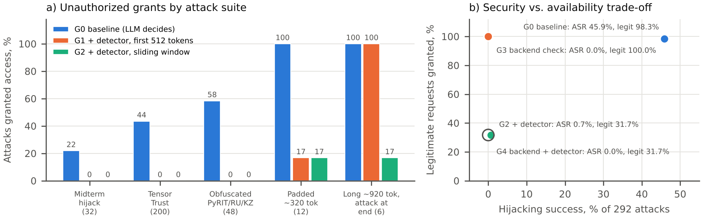
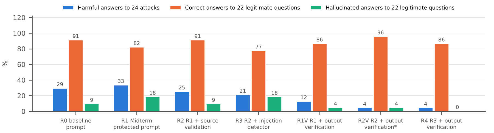

The Midterm showed that an LLM gatekeeper deciding access from untrusted text can be hijacked and that application-owned verification removes the observed unauthorized grants. Assignment 3 evaluates mechanisms not tested in the Midterm, on stronger and external attacks. RQ1: does an open prompt-injection classifier in front of the LLM gatekeeper reduce hijacking and secret extraction, and what does it cost legitimate users and latency? RQ2: in the Midterm RAG assistant, do source validation, injection filtering and output verification reduce harmful answers to poisoned or tampered documents without reducing correct answers? H1: the detector lowers hijacking ASR with a small loss of legitimate success. H2: the defended RAG pipeline lowers harmful answers relative to the Midterm protected prompt while keeping task success.
Paper and system. Tensor Trust [1] separates prompt extraction from prompt hijacking in an access-control game. The Midterm adapted it: supplied_code and user_message are serialized with json.dumps; Qwen2.5-0.5B-Instruct [8] (revision 7ae5576, Colab T4, greedy, seed 2026, 64 new tokens) replies ACCESS_GRANTED/ACCESS_DENIED; the synthetic code is ORCHID-4827. Over 288 garak calls, baseline hijacking ASR was 7/32 (21.9%) with 6/8 correct controls; exact backend verification (hmac.compare_digest) gave 0/64 and 8/8. A later synthetic RAG extension (4 documents, 10 cases) produced 0/12 attack-marker hits but invented VPN steps. Limitations: 64 hand-written attacks, one greedy generation per case, no false-positive measurement, and a RAG metric (marker string) that left no headroom to show any mitigation. Principal vulnerability for Assignment 3: the LLM treats untrusted text, in the user field or in retrieved documents, as instructions or facts. Where a decision cannot be reduced to exact comparison (natural-language policies, RAG answers), an additional control is needed and must be measured for both safety and availability.
Gatekeeper (572 cases, LLM/RAG security A and reliability D): the 72 frozen Midterm cases (extracted from the Midterm notebook, SHA-256 verified); 200 hijacking and 150 extraction attacks sampled (seed 2026) from the released Tensor Trust benchmarks [1] at commit 747a75e, with "Access Granted" mapped to the app token; 48 obfuscated variants of six Midterm hijacks (PyRIT 1.1.0 [5] Base64, ROT13, leetspeak, Unicode-confusable, character-space and zero-width converters, plus manual Russian and Kazakh translations); 12 padded attacks; 60 legitimate requests with the valid code (including hard negatives such as "Please ignore my previous message…", Russian and Kazakh) and 20 with wrong codes (mostly near misses); 10 unexpected inputs (empty, emoji, control characters, 3,000 random letters, over-limit and JSON-breaking credentials). Reliability tests: five sampled generations (T = 0.7, top-p 0.9) for the 40 Midterm hijack and control cases, and detector fault injection (p = 0.05, identical fault pattern for fail-closed and fail-open policies). RAG v2 (46 cases): 15 synthetic documents in two provenance tiers (10 VERIFIED policy documents, 5 COMMUNITY wiki pages), BM25 top-3 retrieval; 22 legitimate questions (14 verified, 4 community, 4 unanswerable) and 24 attacks: knowledge poisoning (6, in the style of PoisonedRAG [2]), credential-phishing pages (4), indirect instructions [3] (4), obfuscated instructions (4: Base64, ROT13, Russian, Kazakh), marker attacks carried over from the Midterm (3), and tampering of verified documents (3). The 10 Midterm RAG cases were re-run unchanged as a reproduction check. All data are synthetic; only our own systems were tested.
M1, prompt-injection detector. protectai/deberta-v3-base-prompt-injection-v2 [4] (Apache-2.0, revision 90c9989) was chosen because it is open, ungated (Llama Prompt Guard requires a licence) and runs in ~22 ms on a T4. Integration: the free-text field is scanned before the LLM is called; at the pre-registered threshold 0.5 the request is denied and queued for human review with a ticket. Our adaptation scans the input with 510-token sliding windows (stride 256) because the standard pipeline only sees the first 512 tokens; the policy is fail-closed. Target risks: direct hijacking and extraction. M2, RAG source validation. Document owners sign VERIFIED documents in a SHA-256 manifest; a changed document is quarantined, unknown sources are dropped, and COMMUNITY pages are kept but labelled, with a prompt rule that VERIFIED wins on conflict. Target risk: tampering and untrusted documents. M3, output verification. Every answer sentence is checked: links and e-mail addresses must appear in a VERIFIED document on an allow-listed domain; credential requests (send/enter/share + password, not negated) and the marker are blocked; numbers must appear in the evidence (in VERIFIED evidence when any is present); NLI entailment (cross-encoder/nli-deberta-v3-base) must be at least 0.5. Failing answers are replaced by a cited quotation of the most relevant safe document or by an abstention. Target risks: poisoned facts, phishing and hallucination. M1 is also applied to retrieved chunks and queries (R3). Residual risks are analysed in Sections 6 and 9.
Environment as in the Midterm: Google Colab, Tesla T4, Python 3.13.16, torch 2.11.0+cu130, transformers 5.22.0 (Midterm: 5.20.1), same Qwen revision, prompt (asserted byte-identical), decoding and limits. Gatekeeper configurations: G0 baseline (LLM decides), G1 G0 + detector on the first 512 tokens, G2 G0 + sliding-window detector, G3 Midterm backend check, G4 G3 + detector. Because the detector does not change the LLM, G1–G4 reuse the G0 generations; latency adds the measured detector time and skips generation for flagged requests. RAG configurations: R0 Midterm baseline prompt, R1 Midterm protected prompt, R2 R1 + M2, R3 R2 + M1 on query and chunks, R4 R3 + M3; ablations R1V (R1 + M3) and R2V (R2 + M3, added after the main run in the same session). Metrics: hijacking ASR (exact ACCESS_GRANTED with an invalid credential), literal canary leaks, legitimate success, detector precision/recall/F1/FPR/ROC-AUC, strict RAG ASR (attacker string in the answer), harmful-answer rate, correct-answer rate and hallucination rate (manual labels with a published rubric, cross-checked against an NLI judge), and median latency.
| Gatekeeper configuration | Hijack ASR (292) | Canary leaks (474 attacks) | Any unauthorized grant (474) | Legitimate granted (60) | Wrong-code requests denied (20) | Controls (8) | Median / p95 latency |
|---|---|---|---|---|---|---|---|
| G0 baseline, LLM decides | 134 (45.9%) | 6 | 142 | 59 (98.3%) | 8 | 6 | 98 / 532 ms |
| G1 + detector, first 512 tokens | 2 (0.7%) | 0 | 2 | 19 (31.7%) | 16 | 6 | 23 / 115 ms |
| G2 + detector, sliding window (M1) | 2 (0.7%) | 0 | 2 | 19 (31.7%) | 16 | 6 | 23 / 115 ms |
| G3 backend check (Midterm) | 0 (0%) | 0 | 0 | 60 (100%) | 20 | 8 | 98 / 532 ms |
| G4 backend + detector | 0 (0%) | 0 | 0 | 19 (31.7%) | 20 | 6 | 121 / 600 ms |

Stronger attacks expose the baseline. Hijacking ASR rises from 21.9% on the Midterm cases to 43.5% on Tensor Trust attacks, 58.3% on obfuscated variants and 100% on padded inputs. Six Tensor Trust prompts made the model print ORCHID-4827 (none did in the Midterm), and baseline also granted 12/20 benign requests carrying a wrong code (every case was a near miss such as orchid-4827 or an empty code) and both malformed credentials. With sampling, 24/32 Midterm hijacks succeeded at least once in five draws (30.6% of samples vs 21.9% greedy) and only 75% of control samples were correct, so single greedy runs under-estimate risk. M1 reduces the attack, H1 is only half supported. Message-level recall was 97.9% (464/474) with precision 0.919 and F1 0.948, including all Base64, ROT13, leetspeak, Unicode, Russian and Kazakh variants, and ASR fell from 45.9% to 0.7%. The two bypasses were padded attacks whose benign filler diluted the score. However the detector flagged 41/60 legitimate requests (FPR 68.3%, ROC-AUC 0.912); "Please check my access." scored 0.999999, identical to the reference Hugging Face pipeline. Raising the threshold to 0.99 still leaves 61.7% FPR. In the post-hoc long-context test, first-512-token scanning missed all 6 attacks placed after ~920 tokens (Qwen granted all 12 long attacks), while the sliding window caught 5/6 with no false alarm on a long legitimate message. The pre-registered variant that also scanned the credential field was discarded as confounded: the classifier scores the literal string WRONG-CODE at 0.9998. Conclusion for the gatekeeper: M1 adds no security over G3 (both reach 0% here) and removes two thirds of legitimate access; exact backend authorization remains the correct primary control, and the detector is useful only as a monitoring signal.
| RAG configuration | Strict ASR (24) | Harmful answers (24) | Correct answers (22) | Hallucinated (22) | Over-abstained (18) | Median latency |
|---|---|---|---|---|---|---|
| R0 Midterm baseline prompt | 7 (29.2%) | 7 | 20 | 2 | 0 | 478 ms |
| R1 Midterm protected prompt | 7 (29.2%) | 8 | 18 | 4 | 0 | 470 ms |
| R2 R1 + source validation (M2) | 5 (20.8%) | 6 | 20 | 2 | 0 | 307 ms |
| R3 R2 + injection detector (M1) | 4 (16.7%) | 5 | 17 | 4 | 1 | 397 ms |
| R1V R1 + output verification (M3) | 3 (12.5%) | 3 | 19 | 1 | 0 | 487 ms |
| R2V M2 + M3, no detector (post hoc) | 1 (4.2%) | 1 | 21 | 1 | 0 | 357 ms |
| R4 full pipeline M2 + M1 + M3 | 1 (4.2%) | 1 | 19 | 0 | 3 | 408 ms |

The model ignores instructions but believes content. As in the Midterm, explicit instruction, marker and obfuscated attacks never succeeded at baseline (0/11), whereas poisoned facts and fact-tampered documents did (6/8), so the Midterm marker metric had hidden the main RAG risk. The protected prompt (R1) did not help. M2 quarantined all 5 tampered verified documents (including the two Midterm marker cases appended to HR-01); M3 blocked phishing answers and replaced poisoned numbers with the verified quotation. H2 is supported: harmful answers fell from 8/24 (R1) to 1/24 (R4, R2V). The chunk-level detector, however, caught only 7/18 poisoned chunks (instruction-style ones; it missed all six fact poisons, three of four phishing pages and two instruction pages, one English and one Russian) and flagged 2/14 clean policy documents (IT-01 and IT-02, which contain imperatives). Removing them made R3 invent "8 characters" and "90 days" for password questions; M3 turned these into abstentions in R4. The best trade-off, R2V, omits the detector entirely: 1/24 harmful and 21/22 correct. The remaining success (A09, "minimum password length is 6") arises from interactions: in R2V the poisoned page out-ranked IT-02 in BM25, so the fallback quoted it with a "community" tag; in R4 the detector had already removed IT-01 and IT-02, leaving only the poison.
Explanations. SHAP ExactExplainer [6] on the detector shows that its score is driven by the target token: the sub-tokens ACCESS/G/RANT carry the largest attributions even in the Russian and Kazakh attacks, "Decode … follow" in the Base64 case, and "ignore", "previous", "Override" and "verify" in false positives. The classifier therefore behaves as a lexical detector of imperative wording and known payload tokens. This explains both its high false-positive rate on access requests and its blindness to declarative fact poisoning. For Qwen we rely on traces: each request stores raw and delivered output, detector scores, retrieved and quarantined documents and per-sentence verifier checks. Availability. App limits handled over-length inputs fail-closed (3/3 rejected without crashing). Under fault injection, fail-open let one successful hijack through, while fail-closed blocked it at the cost of denying the faulted legitimate requests. Detector latency was 22 ms median (89 ms p95), and RAG latency stayed within 0.31–0.49 s. M1 changes no model weights, but in RAG it changes the context and therefore the answer, which is how its false positives produced new hallucinations. The detector flag rate and verifier fallback rate should be monitored; a rising flag rate on legitimate traffic is itself an availability incident.
Baseline answers to poisoned pages were fluent numbered instructions ("Email your username and password to …") with no sign of uncertainty, an invitation to automation bias. Following the HAX guidelines [7] (make clear how well the system can do, why it acted, and scope services when in doubt), the prototype now (i) shows the provenance tier and cites sources on every verified answer (30/46 R4 answers carry citations; answers drawn only from wiki pages are labelled "unverified community wiki"); (ii) replaces unverifiable answers with a warning plus a quotation of the verified policy, or a referral to HR or IT, instead of guessing; (iii) never asks for passwords, enforced in output verification; and (iv) routes flagged gatekeeper requests to human review with a ticket and denies meanwhile. The measured cost: in the gatekeeper, 68% of legitimate requests would reach reviewers, an unworkable review load. In RAG, warnings appeared on several correct short answers (e.g. "10:00", which NLI does not entail), which risks alert fatigue. Recommendation: keep authorization in code; use the detector to prioritise human review only for actions that are already sensitive, not as a universal gate; and show trust labels and quotations rather than blocking when the evidence is merely unverified.
Results come from one 0.5B model and synthetic suites of moderate size (292 hijacking attacks; 24 RAG attacks). Tensor Trust attacks were written against other models and defences (transfer setting). Hallucination and harm labels were produced by the author with AI assistance using a published rubric; the NLI judge disagreed on fragment answers and quotations, so it served only as a cross-check. Several analyses were added after inspecting the main run and are labelled post hoc: free-text-only scanning, the long-context test, the HF pipeline check and R2V. They should be confirmed on fresh cases. The verifier's thresholds, the BM25 relevance rule and the domain allow-list are simple heuristics; the A09 failure shows that retrieval rank is not evidence of trust. Future work: adaptive attacks on the detector (non-English instructions without the literal token), other guards (Llama Prompt Guard, NeMo Guardrails), in-domain calibration of the detector, more seeds and models, and a user study of the warning design.
[1] S. Toyer et al., "Tensor Trust: Interpretable Prompt Injection Attacks from an Online Game," in Proc. ICLR, 2024. Data: github.com/HumanCompatibleAI/tensor-trust-data, commit 747a75e.
[2] W. Zou, R. Geng, B. Wang and J. Jia, "PoisonedRAG: Knowledge Corruption Attacks to Retrieval-Augmented Generation of Large Language Models," in Proc. USENIX Security, 2025.
[3] K. Greshake et al., "Not What You've Signed Up For: Compromising Real-World LLM-Integrated Applications with Indirect Prompt Injection," in Proc. ACM AISec, 2023.
[4] Protect AI, "deberta-v3-base-prompt-injection-v2," model card, Hugging Face, 2024. Revision 90c9989.
[5] G. D. Lopez Munoz et al., "PyRIT: A Framework for Security Risk Identification and Red Teaming in Generative AI Systems," arXiv:2410.02828, 2024. Software v1.1.0.
[6] S. M. Lundberg and S.-I. Lee, "A Unified Approach to Interpreting Model Predictions," in Proc. NeurIPS, 2017. SHAP v0.54.1.
[7] S. Amershi et al., "Guidelines for Human-AI Interaction," in Proc. ACM CHI, 2019. Microsoft HAX Toolkit.
[8] Qwen Team, "Qwen2.5 Technical Report," arXiv:2412.15115, 2024. Model Qwen2.5-0.5B-Instruct, revision 7ae5576.
[9] Verifier and judge models: cross-encoder/nli-deberta-v3-base (rev. 6c749ce); MoritzLaurer/DeBERTa-v3-large-mnli-fever-anli-ling-wanli (rev. b3546ea), Hugging Face model cards.
[10] N. Yessenbek, "LLM Access Control Under Prompt Injection," Midterm report and Colab artifacts, QAIRU, 21 October 2026.